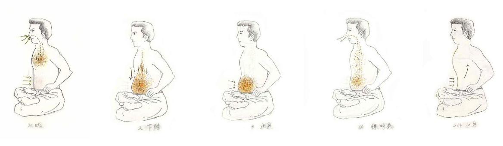

2단계 호흡법
기본 호흡법은 직통호흡이다. 직통호흡과 2단계 호흡법의 가장 큰 차이점은, 직통호흡은 하단전을 부풀리며 숨을 곧장 하단전으로 내려보내지만, 2단계 호흡은 먼저 가슴에 호흡을 채운 뒤 다시 그것을 하단전 부위로 내려보낸다는 점이다.
2단계 호흡은 생명에너지를 더욱 깊이 있게 축적하기 위해 고안된 호흡법이다. 마치 무도를 하듯 호흡법을 단련해 나가는 수련이다 보니(무도에서 다른 것은 모두 빼고 호흡법만 남았다고 생각하면 된다), 준비운동이 중요해진다. 따라서 '행공 준비운동'과 '행공 정리운동'은 필수이다.
수련을 시작하기 전에 행공 준비운동을 한다. 준비운동은 경직된 부위를 풀어 주고, 호흡을 하는 데 있어 원활한 움직임을 돕는 역할을 한다.
횡격막 부위를 풀어 준다. 두 손끝을 가지런히 모은 뒤 왼쪽 갈비뼈 밑부터 3~4초 간격으로 꾹 눌렀다가 순간적으로 힘을 뺀다. 이렇게 지압 부위를 4~5등분하여 자리를 옮겨 가며 명치 끝까지 지압해 준다. 오른쪽 횡격막도 동일하게 실시한다. 반드시 왼쪽부터 시작해야 한다.
그리고 주먹을 말아 쥐고 하단전을 30~35회 정도 두드려 준다. 처음에는 살살 두드려 주지만, 하단전이 튼튼해지면 탁탁 소리가 날 정도로 두드려 주어도 무방하다.
폐를 빈틈없이 가득 채운 호흡을 하단전으로 내려보내다 보니 자연스럽게 심호흡이 되고, 호흡도 강력해질 수밖에 없다. 그렇기 때문에 알게 모르게 신체에 무리를 줄 수 있다.
여기서 너무 가득 채우려고 하지말고 여유를 주며 들이 마시는 게 요령이자 핵심이다. 흡식 시 7~8할 정도만 폐를 채운다는 느낌으로 들이마신다.
초심자의 경우 수련을 마치고 나면, 몽둥이로 두들겨 맞은 듯 아플 수 있다. 딸꾹질이 나오기도 하며, 평소 자주 사용하지 않는 근육과 횡격막을 최대한 사용하기 때문이다. 이는 차차 적응되면서 사라진다.

흡식(吸息) 시에는 위의 그림보다 아랫배(하단전)를 등 쪽으로 더욱 당겨 주어야 한다. 호식(呼息)의 경우에도 내쉬는 숨과 함께 아랫배를 등 쪽으로 서서히 당겨 주다가, 호흡을 모두 내쉬었을 때는 아랫배가 등 쪽으로 바짝 당겨져 있어야 한다.
'지식(止息)'이 추가되어 있다. 호흡 비율은 흡(吸):지(止):호(呼) = 1:0.5:1이다. 즉, 10초를 들이마셨다면 5초를 멈추고, 10초를 내쉬는 식이다.
호흡방법은, 10초간 숨을 들이마셔 폐에 가득 채운 상태에서 욱- 하는 느낌으로 아랫배를 불륵 내밀며 하단전으로 급히 내린다. 그리고 숨을 멈추지 말고 바로 숨을 10초에 걸쳐 내뿜어 준다. 이것을 3~4회 반복해 준다. 곧바로 숨을 멈추고 바로 호흡에 들어가면 신체에 무리가 따르기 때문이다.
이제 본격적인 호흡에 들어간다. 방법은 앞서와 같이 아랫배를 등 쪽으로 서서히 당겨주면 10초 동안 천천히 폐에 가득 채운 다음 그것을 욱- 하는 느낌으로 아랫배를 불룩 내밀며 급히 내린다. 그 상태에서 5초 정도 숨을 정지한다. 그리고 10초에 걸쳐 서서히 코로 숨을 내뿜어 준다.
자신의 스타일에 맞게 호식(呼息)을 조금 길게 잡거나 지식(止息)에 무리를 느낀다면 멈추는 시간을 줄여도 전혀 상관없다.
호흡량은 호흡 비율에 1~2초씩 늘린다는 감각으로 접근하면 된다. 그러나 생명에너지가 충분히 축적되면 수십 초에서 분 단위로 갑자기 늘어나기도 하기 때문에 기억하고 있어야 한다. 놀랄 것 없이 새로운 차원이 열린 것이다.
이런 식으로 흡(吸):지(止):호(呼) = 1:1:1 ~ 1:2:1까지 지식(止息)의 비율을 올릴 수 있다. 5분대 호흡도 가능해지며, 지식(止息)만 30분 이상 하는 수련자들도 있다.
다만 호흡 멈추기 대회를 하는 것도 아니고, 이러면 바라문의 요가와 다를 바 없게 된다. 호흡은 마음을 보조하는 것이다. 이런 것에 정신이 팔려 극강의 호흡만 추구하게 되면, 결국 방편(方便)이 주(主)가 되어 방향을 잃어버릴 수 있다.
1분대 호흡이 넘어갈수록 연속호흡은 의미가 없다. 한 번 호흡한 뒤에는 휴식을 취한다. 열심히 한다면 30초~1분, 그냥 가만히 쉬거나 가벼운 직통호흡으로 전환한다. 이것은 다소 팽팽한 상태이며, 필자는 2시간 수련에 3~4회 정도, 한 번씩 호흡한 뒤 쉬면서 반성명상을 하다 가끔 호흡이 필요할 때마다 한다.
숙달되면 호흡을 모두 내쉰 상태에서 그대로 지식(止息)에 들어간다. 즉, '2차 지식(止息)'이다. 물론 자신에게 맞지 않으면 생략해도 된다. 처음에는 당황스러울 수 있지만, 필자처럼 오히려 이 방법이 더 편한 사람들도 있다. 전체 호흡 시간이 자연스럽게 늘어나는 셈이다.
예) 흡:지:호:지 = 30:30:30:30 (합계 2분)
수련을 마치면 행공 정리운동을 해야 한다. '추마요법(推摩療法)'을 참조하여 행공 정리운동으로 활용하면 된다. 행공으로 축적된 생명에너지를 신체에 골고루 파급시켜 주며, 담이 결리거나 몸이 불편해지는 것을 어느 정도 예방하고 치유해 주는 동작이다.
상기한 내용을 보면 2단계 호흡은 기본 호흡에 비해 까다롭고, 호흡을 멈추는 과정도 있으므로 욕심을 부리면 위험할 수 있다. 또한 생명에너지의 강렬한 체험에 이끌려 방편이 주가 되어, 정도(正道)를 이탈할 우려도 있다. 호흡이 일시적 쾌락이 전부인, 마치 아편(opium) 처럼 작용하는 것이다. 따라서 기본 호흡으로 충분하다.
다만 이 호흡법을 기록으로 남기는 이유는 언젠가 누군가가 이를 과학적으로 밝혀낼 수도 있고, 필자처럼 반드시 필요한 사람이 나타날 수도 있다고 믿기 때문이다.
그러나 그것보다 더 중요한 것은 언제나 자신의 삶을 돌아보고 반성하는 것이다. 필자는 어떤 호흡법보다도 반성명상을 추구하는 것이 백 번 옳다고 생각한다.